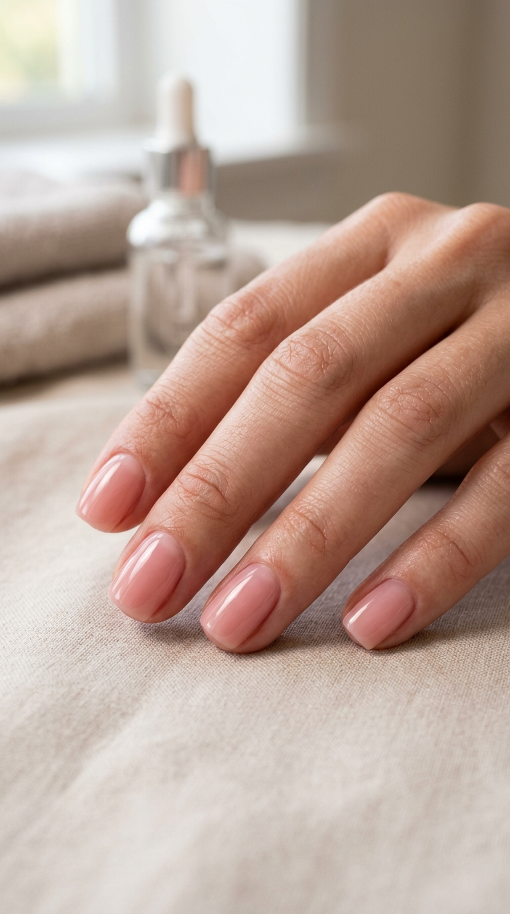
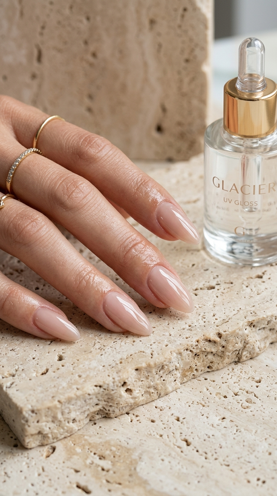

Architectural BIAB, Russian Cuticle Precision & Glass Apex: The Professional Salon Vault
The behind-the-chair blueprint. Demystifying apex reinforcement, dry e-file eponychium clearing, and optical high-index glass gel formulas.

Architectural BIAB & The Apex: Structural Balance for Natural Nails
Builder in a Bottle (BIAB) is structural engineering for the natural nail plate. By placing a concentrated droplet of viscous self-leveling builder gel at the upper third of the nail bed (the stress zone) and flipping the hand upside down for five seconds, the apex aligns organically with gravity. This prevents bending fractures without bulky artificial thickness.
"Almond shape on natural nails. Apply a thin slip layer of flexible rubber base, followed by a structured bead of sheer milky BIAB builder gel to build a gentle natural apex. Invert hand for 5 seconds to level, flash-cure, and finish with a high-shine glass topcoat."
The Russian Dry Manicure: Micro-Clearing the Eponychium Pocket
Traditional water soaks expand the natural nail plate with moisture, causing premature gel lifting once the nail shrinks back. The dry Russian technique uses specialized diamond flame and sphere e-file bits at 10,000–12,000 RPM to lift dead pterygium without contacting living tissue. This allows gel color to be applied directly beneath the skin line for weeks of seamless growth.

"Short natural squoval nails. Full dry apparatus manicure (Russian e-file technique with fine diamond flame bit). Lift and trim dead cuticle skin only, dehydrate thoroughly, and tuck a sheer tinted rubber base 0.5mm beneath the proximal fold."
The Liquid Glass Plumping Topcoat: Optical Refraction & Zero Shrinkage
Ordinary topcoats thin out as they cure, resulting in micro-ripples and dullness after a week of exposure to friction. High-index non-wipe plumping formulas utilize photo-initiators that cure in an ultra-dense molecular matrix. The finish acts like a convex magnifying lens over pigment, intensifying shade depth while resisting hairline scratches.

"Almond shape. Seal entire design with a heavy-duty plumping non-wipe glass topcoat. Ensure the free edge is fully capped, allow the gel to self-level for 4 seconds before lamp entry, and cure for a full 60 seconds without early removal."